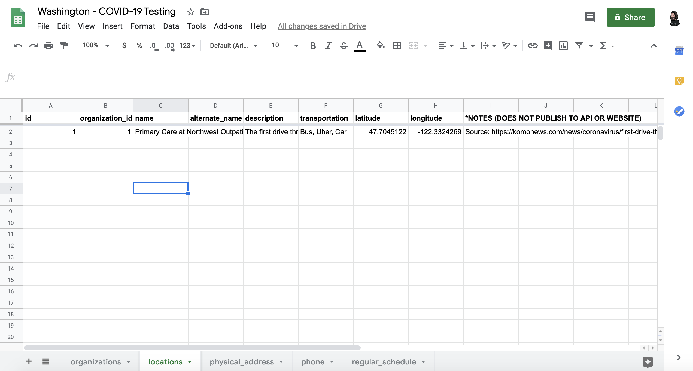
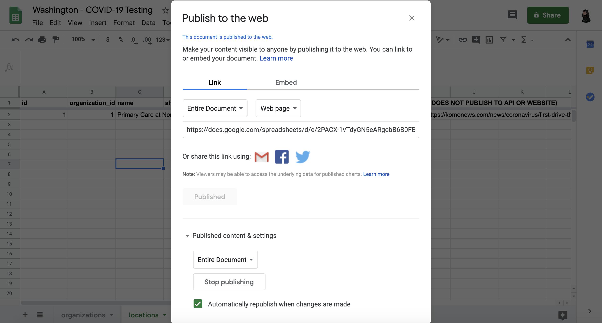
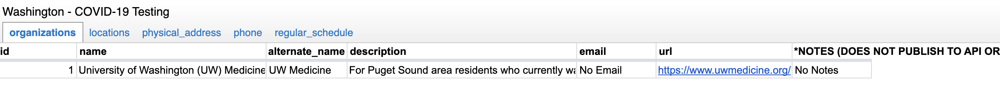
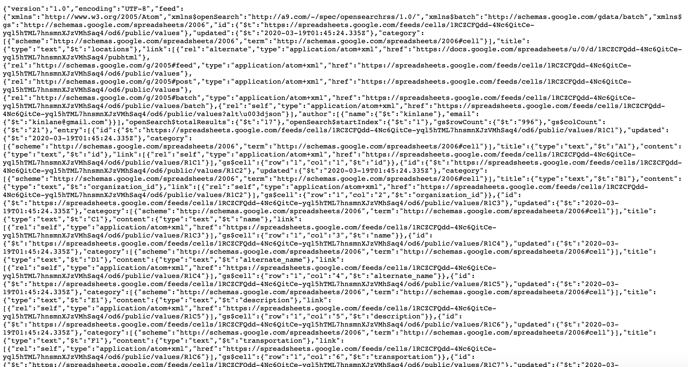
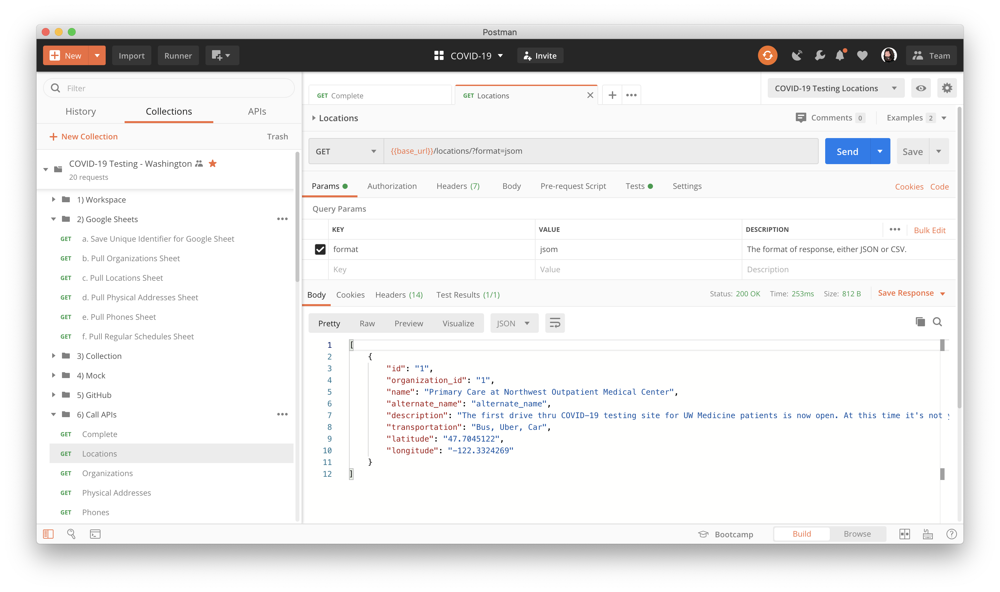
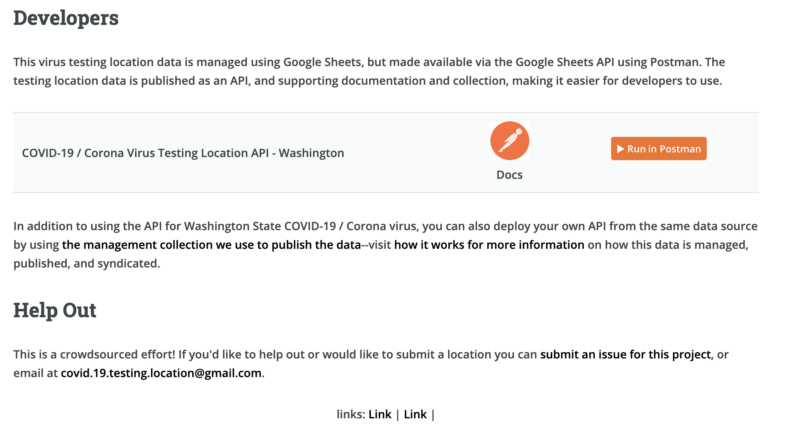
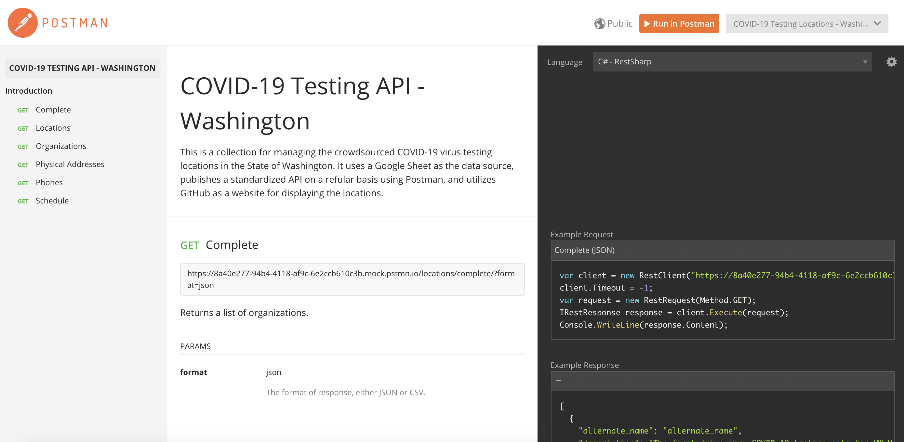
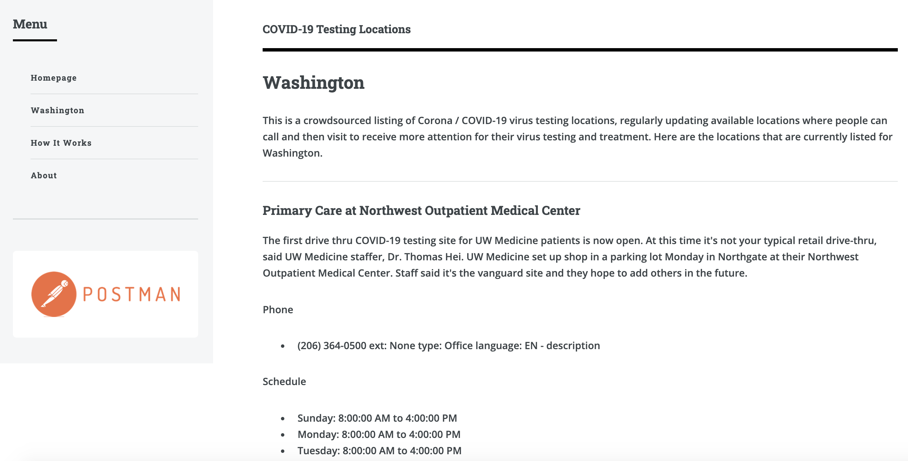

How It Works
This is a crowdsourced listing of Corona / COVID-19 virus testing locations, regularly updating available locations where people can call and then visit to receive more attention for their virus testing and treatment.
Data for Each State is Stored in Google Sheet

Each Sheet is Published to the Web

Makes It Available for Public Access

Makes It Available as JSON for Integration

A Postman Collection for Publish an API

An API That Any Developer Can Use

Documentation Published for Developers to Use

Allowing Data to be Used on Websites
